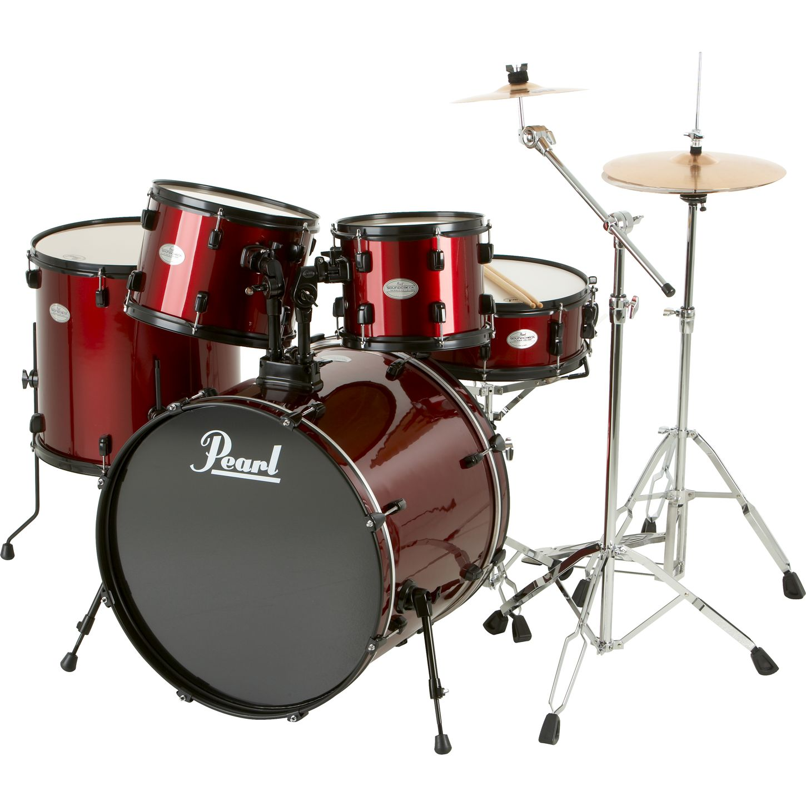

 Drums are a musical instrument that a collection of drums and other percussion instruments, typically cymbals, which are set up on stands to be played by a single player, with drumsticks held in both hands, and the feet operating pedals that control the hi-hat cymbal and the beater for the bass drum. A standard Drum kit consists of the following:
In the 1840s, percussionists began to experiment with foot pedals as a way to enable them to play more than one instrument, but these devices would not be mass-produced for another 75 years. By the 1860s, percussionists started combining multiple drums into a set. By World War I, drum kits were often marching band-style military bass drums with many percussion items suspended on and around them. Drum kits became a central part of jazz, especially Dixieland. The modern drum kit was developed in the vaudeville era during the 1920s in New Orleans.
| Name | Link |
|---|---|
| Main | Welcome to my website! |
| Keyboard | The Keyboard |
| Guitar | The Guitar |